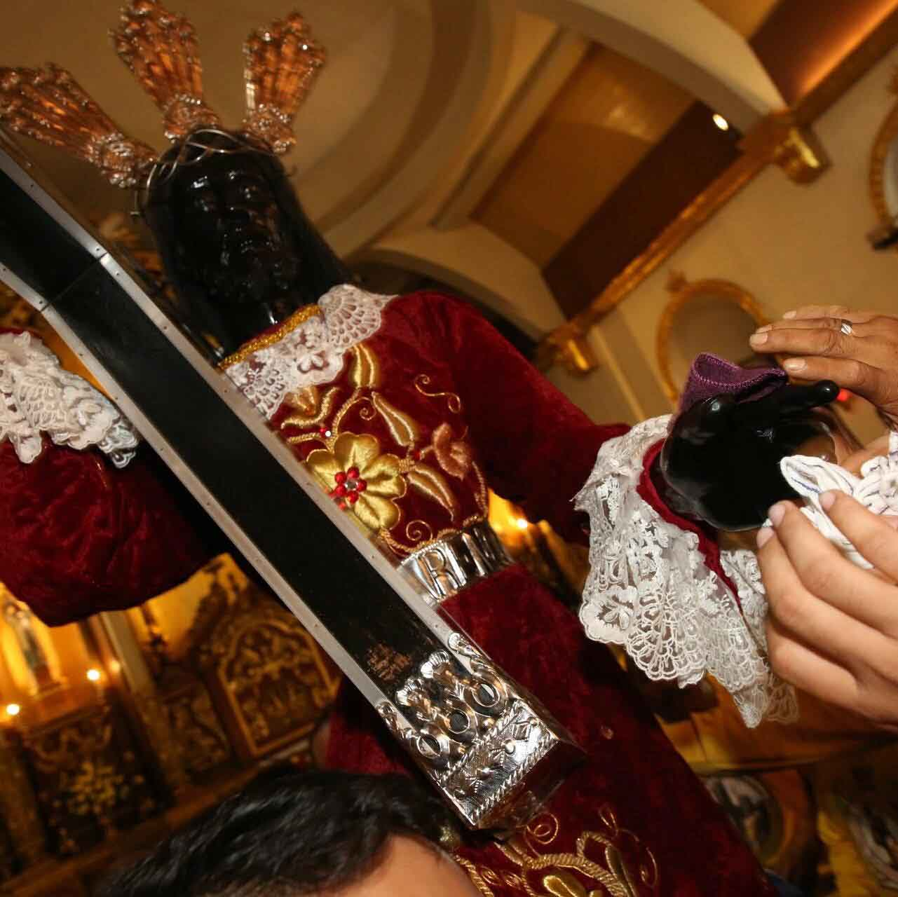

strong faith as they joined the procession in welcoming the Quiapo Church, Manila to La Union. At exactly 5:30 a.m., the Soldiers’ to Saint William the Hermit Cathedral.
Avelino Minister of the Saint William the Hermit Cathedral, said the cathedral of the Diocese of San Fernando De La Union from
After the procession, a concelebrated mass was officiated Saint William the Hermit Parish. Rev. Fr. Douglas Badong, Quiapo, said in his homily that the image of the “Black
“If you look at the image of Jesus Christ as ‘Black people are attracted to the image because it shows an image of
miracles as proven by many Catholic devotees, who were
through prayers and devotion,” said Badong. He added, continuous faith in God as a savior from all the
suffering of claimed that he received a lot of blessings when he made a Nazarene’
is really a miraculous one because a lot of my guidance,” Carpio said.
THE PILGRIM IMAGE OF THE BLACK NAZARENE VISITS SAN FERNANDO
Devotees of Nuestro Padre Jesus Nazareno showed their devotion through attending the High Mass in honor of the Pilgrim Image of the Black Nazarene that was presided by
Most Rev. Daniel O. Presto held inside the cathedral and the translacion around the City of San Fernando.
Thousands of Catholic devotees in La Union maintain their pilgrimage of the “Black Nazarene”
(Poon Nazareno) from procession here started at the ‘Monument of Unknown Yalung, president of the Extra-Ordinary Eucharistic Lay image of the miraculous
“Black Nazarene” will stay in the Nov. 26 to Dec. 2.
by Rev. Fr. Roberto Benito Collado, the parish priest of the Parochial Vicar of Minor Basilica of the
Black Nazarene- Nazarene” is an image of hope, strength, and endurance. Nazarene’, it shows an image of suffering; however, many hope. The people
believe that the image has a lot of relieved from their miseries upon seeking the help from God “The image of ‘Black Nazarene’ manifests an
inspiration for his people in this world.” Catholic devotee Bernardo Carpio devotion to the “Black Nazarene.” “The image of ‘Black personal
problems were gradually solved after I asked his
"KINDNESS IS A GIFT EVERYONE CAN AFFORD TO GIVE"
Inclusiveness is one of the four core values of the City Government of San Fernando, La Union through the leadership of Mayor Dong Gualberto.
Last December 3, Officials and Volunteers of San Fernando took the time to celebrate the holiday season with our Persons with Disability friends.
These members of our community are in need of help regarding patience, love and care. The humble and ever loving Mayor of San Fernando City supervised
and led the program for Persons with Disability that showed his commitment and service to the people of San Fernando.